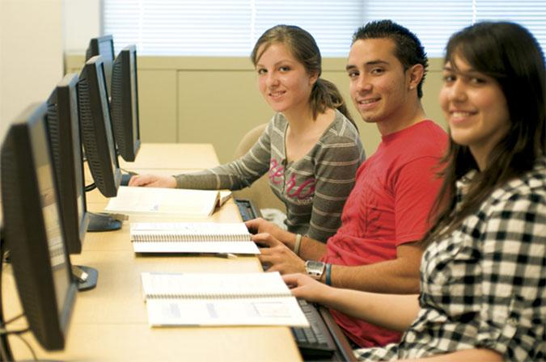

Undergraduate Program Overview

About the Program
The Computer Science undergraduate program at Cal Poly Pomona focuses on hands-on learning and real-world problem solving. The program delivers a strong theoretical foundation and practical skills to prepare students for careers in the tech industry.
The BS in Computer Science includes:
- Project-based coursework following the "learn by doing" philosophy
- Senior projects and interships opportunities
- Access to Linux and Windows laboratories
- A curricullum aliogned with ABET standards
Students can also choose electives that match their career interests, such as AI, software engineering, data science, cybersecurity, mobile/web development, and game programming.
Contact Information
📍 Building 3 - Room 1645
✉️ cs@cpp.edu
📞 909.869.3440
📠 909.869.4733